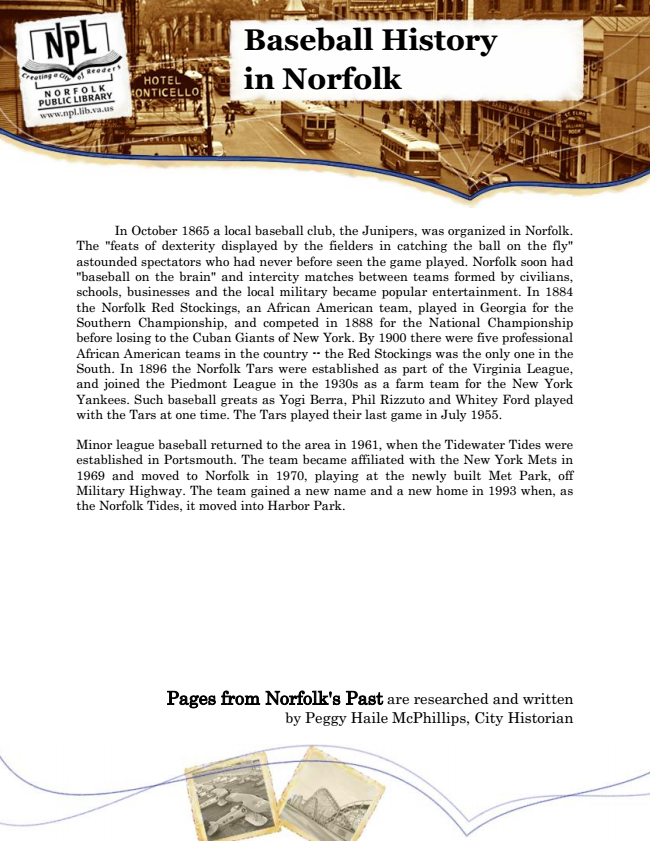

Baseball History in Norfolk
In October 1865 a local baseball club, the Junipers, was organized in Norfolk. The "feats of dexterity displayed by the fielders in catching the ball on the fly" astounded spectators who had never before seen the game played. Norfolk soon had "baseball on the brain" and intercity matches between teams formed by civilians, schools, businesses and the local military became popular entertainment. In 1884 the Norfolk Red Stockings, an African American team, played in Georgia for the Southern Championship, and competed in 1888 for the National Championship before losing to the Cuban Giants of New York. By 1900 there were five professional African American teams in the country -- the Red Stockings was the only one in the South. In 1896 the Norfolk Tars were established as part of the Virginia League, and joined the Piedmont League in the 1930s as a farm team for the New York Yankees. Such baseball greats as Yogi Berra, Phil Rizzuto and Whitey Ford played with the Tars at one time. The Tars played their last game in July 1955.
Minor league baseball returned to the area in 1961, when the Tidewater Tides were established in Portsmouth. The team became affiliated with the New York Mets in 1969 and moved to Norfolk in 1970, playing at the newly built Met Park, off Military Highway. The team gained a new name and a new home in 1993 when, as the Norfolk Tides, it moved into Harbor Park.
Pages from Norfolk's Past are researched and written by Peggy Haile McPhillips, City Historian